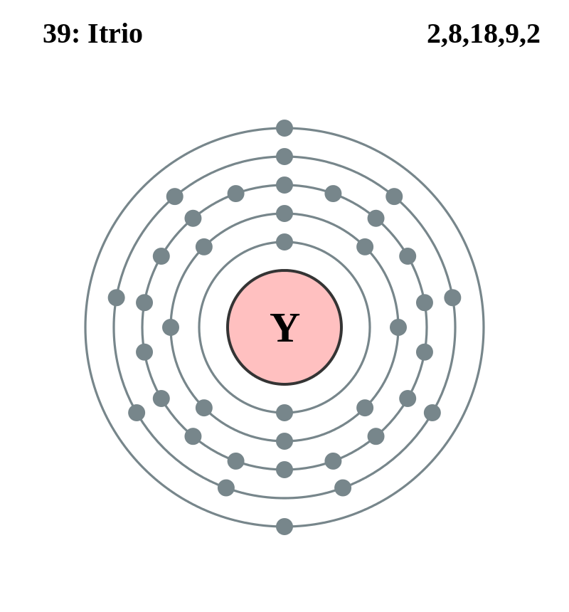

|
|
||
|
Itrio El itrio es relativamente estable cuando está expuesto al aire y tiene un brillo metálico plateado. Sin embargo, las partes pequeñas de este metal se encienden en contacto con el aire a temperaturas superiores a 400 °C. El itrio natural contiene un isótopo, pero también se han caracterizado diecinueve isótopos inestables. Las muestras de rocas lunares presentan altas concentraciones de contenido de itrio. Se extrae con fines comerciales de la arena de monocita y de la bastnasita. El óxido de itrio se utiliza para la fabricación de compuestos que dan el color rojo de los tubos de televisores y para producir granates de hierro e itrio para filtros de microondas. |
 |
DATOS Número Atómico: 39 Peso Atómico: 88.91 Electronegatividad: 1,22 Configuración Electrónica: 4d15s2 Estados de Oxidación: +3 No. de Electrones de Valencia: 3 |